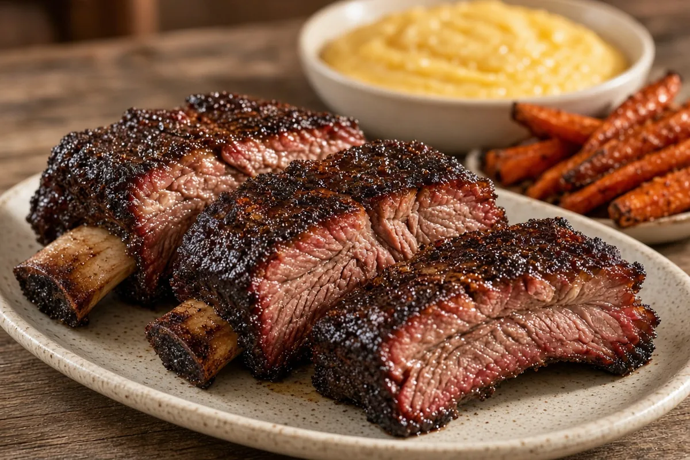

Pellet-Grill Smoked Beef Short Ribs
English-cut beef short ribs smoked on the pellet grill until probe-tender, with a simple salt, pepper, garlic, and paprika rub. Plan about 6 hours, plus a short rest. These are chuck short ribs, not the larger plate “dino” ribs.

6 servings
By
Yield: 6 servings
Prep:
Cook:
Total:
Difficulty: Medium
Ingredients
- 5 lb bone-in beef short ribs, English cut
- 2 Tbsp kosher salt
- 2 Tbsp black pepper
- 1 Tbsp garlic powder
- 2 tsp smoked paprika
- 1 tsp onion powder
- 2 Tbsp yellow mustard, optional, as a binder
- 1/2 cup apple juice, optional, for spritzing
- Pink butcher paper or foil, for wrapping
Instructions
- Pat the short ribs dry. If you are using the yellow mustard, smear on a thin coat. Mix the kosher salt, black pepper, garlic powder, smoked paprika, and onion powder, then coat all sides of the ribs. Let them sit at room temperature while the grill heats, about 15 minutes.
- Set the pellet grill to 250°F with oak, hickory, or a competition blend. Put the ribs on the grate bone side down.
- Smoke undisturbed for 3 hours.
- After 3 hours, spritz with the apple juice only where the surface looks dry, every 45 to 60 minutes. Do not wash the bark off.
- When the bark is dark and set and the internal temperature is around 165 to 175°F, usually at 4 to 5 hours, wrap the ribs in butcher paper or foil if you want a moister, slightly faster finish, then return them to the grill. If you leave them unwrapped, the bark stays crustier and the cook may run longer.
- Keep cooking until a probe slides in with no resistance, like soft butter, usually 203°F internal, about 5 1/2 to 7 hours total. If the probe still meets resistance, keep cooking and check every 20 minutes. Time is a guide; tenderness is the real doneness cue.
- Rest the ribs wrapped or tented for 30 minutes, up to 1 hour. Slice between the bones and serve with the juices from the wrap.
Notes: These are English-cut (chuck) short ribs, which finish in about 6 hours at 250°F. For the larger 3-bone plate racks, use Texas-Style Smoked Beef Dino Ribs, which take 8 to 10 hours. Start the grill mid-morning for an evening dinner. Start Creamy Polenta and Honey Roasted Carrots about 45 minutes before you slice the ribs. If the ribs are done early, hold them wrapped in a dry cooler or a 150 to 170°F oven.